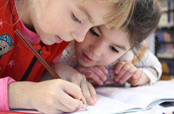

성장급등기와 아동기 자아
오늘날 생활수준이 향상에 따라 식생활과 주거생활의 변화 및 사회적으로는 성 개방 풍조와 대중매체의 강한 자극 등으로 아동의 신체적 발달과 생리적 변화가 조기 가속화되고 있다. 아동들의 신체적, 심리적, 정서적인 문제나 또래나 이성 친구에 대한 표현방식이 서툴거나 위축되어, 또래집단의 분위기에 휩쓸려서 섣부른 결정을 내리기 쉽다. 아동기는 개인에 따라 차이가 있지만 평균적으로 체중과 근육, 머리, 얼굴 특히 생식기관에 성장급등(growth spurt) 현상이 일어난다. 이런 변화는 매우 빠르게 일어나지만 부모 및 성인들로부터 관심과 도움, 사랑과 긍정적인 감정 등을 원하는 동시에 부모와의 분화된 관계와 자아존중감을 추구한다.

자아존중감의 개념 및 의의
자아존중감(自我尊重感, self-esteem) 용어는 자아(self), 자신(ego), 자아지식(self-knowledge), 자아개념(self-concept), 자아정체(self-identity), 자기이해(self-understanding), 자아상(self-image) 등과 같은 의미로 사용되고 있다. 이상과 같은 자아존중감은 자기 자신을 사랑하고 가치 있는 소중하고 유능한 사람으로 여기는 마음이다. 넓은 의미에서 자아확신, 자아평가, 자아가치 등과 유사하게 지칭되는 긍정적인 자아개념을 의미한다. 에릭슨(Erikson, 1968)은 한 인간이 심리적으로 건강하고 성숙한 인격으로 형성하기 한 필수조건으로 높은 자아존중감 이 제정되어야 한다고 했다. 로젠버그(Rosenberg, 1965)는 자아존중감을 하나의 특별한 객체인 자기에 대한 긍정적 혹은 부정적인 태도라고 정의했다.
자아존중감은 인간의 기본적 욕구로 강조하며 건전한 성장 발달에 필수적이고 생존을 위한 결정적인 가치이며 삶에서 역경을 헤쳐 이겨낼 수 있다는 자신에 대한 믿음이며, 가치 있는 존재임을 인정하고, 행복해질 수 있다고 믿는 마음이라고 정의할 수 있다. 송명자(2003)는 자아존중감이 만 2세 경부터 나타나는 자조기술의 발달과 더불어 시작된다고 했다. 일상생활의 경험인 밥 먹기, 옷 입기, 세수하기, 대소변 가리기 등을 통해서 자아존중감의 기초 요인이 된다.
자아존중감과 대인관계 능력
자아존중감은 대인관계에서 긍정적인 요소로 작용하며, 건전한 성격 형성의 바탕이 되고, 성취하고자 하는 일에도 지대한 영향을 미친다. 즉, 자아존중감이란, 스스로의 능력을 가치 있게 인정하고 판단하며, 상대방을 평가하며 원만하고 안정적인 사회적 관계에 대해 인식하고 경험하며 사회화의 기초를 이루고, 가정에서 화목하고 건강하며 행복감을 느끼고, 귀한 존재로 생각하며 사랑하는 태도라고 할 수 있다. 자아존중감이 높은 사람은 자신에 대하여 긍정적으로 판단하고 자신을 가치있게 생각하고 행복한 삶을 산다고 믿으며 해 나간다. 긍정적인 자아존중감이 형성될 수 있도록 정신적으로 건강하게 성장하며 사회에 잘 적응할 수 있도록 도와주어야 한다. 자아존중감은 학업성취와 같은 바람직한 결과를 유도하는 잠재적 요인이 된다.
자아존중감의 형성 요인
자아존중감의 형성에 영향을 주는 요인에는 선천적 요인과 후천적 요인 두 가지로 분류한다. 선천적 요인은 타고 난 성별과 지적, 사회적, 정서적, 잠재력을 말하며 후천적 요인은 아동의 가정과 교육기관, 사회적응 등 다양한 타인과의 관계 속에서 자아존중감이 형성된다고 하였다. 자아존중감이 선행된 이후에야 타인과의 관계 형성에서도 긍정적, 안정적인 생활을 영위할 수 있기 때문이다. 다양한 사회화 과정을 통해서 자아존중감의 발달과정은 본인에 대한 가치 평가와 자신에 대한 타인의 평가에 대한 반영을 토대로 다른 사람들과 원만한 관계를 유지된다고 본다. 자아존중감의 형성은 일생을 살아감에 있어 건강한 정신을 가지며 문제해결 능력을 해 나갈 수 있어 행복감을 성취하는데 중요한 영향을 미친다.
이와 같이 자아존중감은 개인의 총체적인 자아를 형성하며 개인의 성격 및 행동을 관찰하고 이해하는데 필요한 심리적 개념으로서 긍정적 태도 및 행동으로 개념화할 수 있다. 따라서 자아존중감은 대인관계를 형성하고 다시 아동의 사회적 능력을 발전시켜주는 상호 간에 순환적인 관계 형성을 이루며 발달한다.